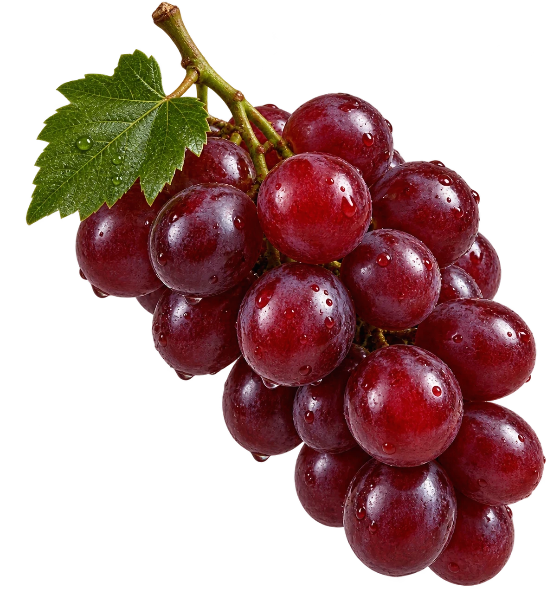
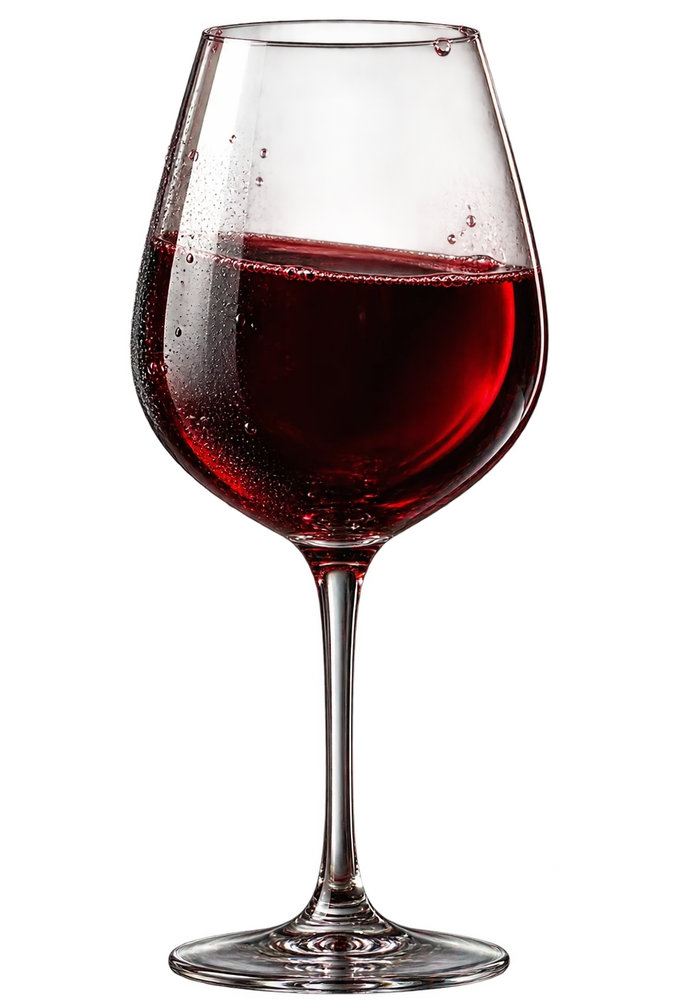

Tinto
Reserva do Rincón
Fruta madura, taninos aveludados e um final longo de especiarias — colhido nos talhões mais altos da encosta.
Ver ficha técnica →Vinícola Rincón · Colheita Autoral
Vinhos de terroir único, produzidos em pequenos lotes para preservar cada nuance da fruta.
Conhecer a coleção

Nossa filosofia
Há três gerações cultivamos a mesma encosta, respeitando o ritmo da videira em vez de forçá-lo. Cada rótulo nasce de um único talhão, colhido à mão e vinificado em lotes pequenos o suficiente para caber a atenção de quem faz.
Não perseguimos escala — perseguimos identidade. É o solo, a altitude e o tempo que assinam cada garrafa, não a fórmula.
Colheita manual, uva a uva.
1987
Primeira colheita
42 ha
Vinhedos em socalcos
3
Gerações na condução
12
Rótulos em produção
A coleção
Tinto
Fruta madura, taninos aveludados e um final longo de especiarias — colhido nos talhões mais altos da encosta.
Ver ficha técnica →Branco
Acidez viva e notas cítricas, resultado das noites frias dos vinhedos a 900 metros.
Ver ficha técnica →Rosé
Leve e floral, pensado para ser bebido jovem, sem pressa, à mesa com quem se gosta.
Ver ficha técnica →“Rincón não engarrafa vinho — engarrafa um lugar e o tempo que ele levou para chegar até aqui.”
— Guia de Vinhos do Sul, edição 2025
Vamos conversar
Recebemos grupos pequenos para degustações guiadas, sob agendamento prévio. Conte um pouco sobre a ocasião e retornamos em até dois dias úteis.